Mengolah Kayu,
Memperkuat Industri
Kertas Indonesia
Dengan kapasitas produksi 130.000 ton per tahun, PT Adiprima Suraprinta menjadi salah satu produsen kertas terkemuka di Indonesia yang berkomitmen pada keberlanjutan dan teknologi kelas dunia.
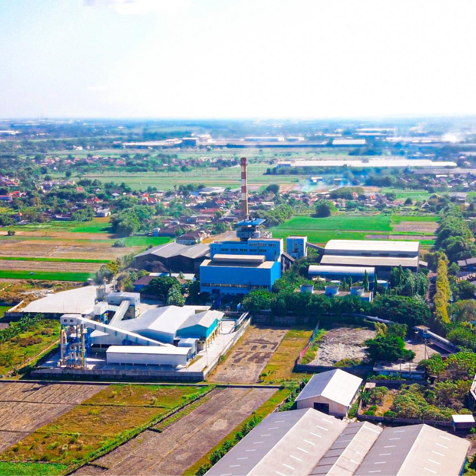
100% Daur Ulang
Material bahan baku
ISO Certified
Standar internasional
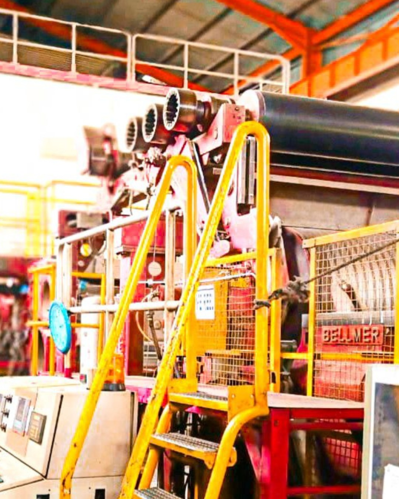
Produsen Kertas Terkemuka di Indonesia
PT Adiprima Suraprinta adalah anak perusahaan terkemuka dari PT Jawa Pos Koran, yang berkantor pusat di Desa Sumengko, Wringinanom, Gresik. Perusahaan ini didirikan pada tahun 1994 dengan fokus awal pada produksi kertas koran untuk memenuhi kebutuhan Jawa Pos Group.
Seiring pertumbuhan bisnis, Adiprima mengembangkan kapasitas produksinya dengan dua mesin kertas yang diimpor langsung dari Eropa. Dengan kapasitas 110.000 ton kertas koran dan 20.000 ton kertas tulis & cetak per tahun, Adiprima menjadi pilar penting industri media dan percetakan nasional.
Keunggulan kami terletak pada komitmen terhadap keberlanjutan — seluruh bahan baku berasal dari 100% material daur ulang, menjadikan Adiprima pelopor industri kertas hijau di Indonesia.
Lini Produk Unggulan
Seluruh produk PT Adiprima Suraprinta diproduksi 100% dari bahan baku daur ulang menggunakan mesin kertas berteknologi Eropa, memenuhi standar kualitas nasional dan internasional.
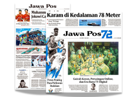
Kertas KoranNewsprint Paper
Kertas koran berkualitas tinggi diproduksi 100% dari bahan baku daur ulang. Dirancang khusus untuk kebutuhan media cetak dengan hasil cetak yang tajam dan konsisten.
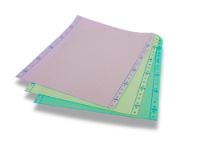
Kertas Tulis & CetakWriting & Printing Paper
Kertas tulis dan cetak premium untuk perkantoran, penerbitan buku, dan percetakan umum. Permukaan halus dengan kecerahan tinggi untuk hasil cetak optimal.
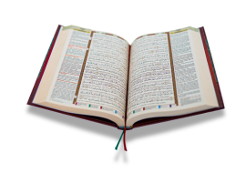
Copy PaperCopy Paper
Kertas fotokopi berkualitas internasional untuk kantor, sekolah, dan instansi pemerintah. Anti-macet, bebas tetesan tinta, dan cocok untuk semua mesin fotokopi.
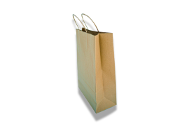
Kertas Daur UlangBrown Recycle Paper
Diproduksi 100% dari kertas daur ulang berbahan serat US OCC berkekuatan tinggi. Bersertifikasi FSC, memenuhi Food Contact Grade, bebas BPA, BPS, dan logam berat.
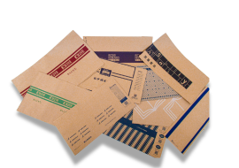
KraftE-Kraft
Diproduksi 100% dari bahan daur ulang dengan permukaan coklat halus dan daya serap standar. Unggulan pada konsistensi warna yang luar biasa dan stabilitas tinggi untuk berbagai proses laminasi.
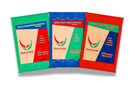
WrappingWrapping Kraft
Diproduksi 100% dari bahan daur ulang dan melalui proses laminasi PE untuk daya tahan yang lebih kuat. Ideal untuk pembungkus makanan yang memerlukan ketahanan terhadap kelembaban.
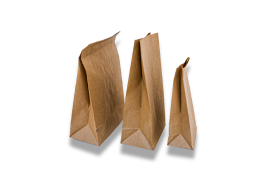
Medium PaperMedium Paper
Kertas ringan namun kuat dengan internal sizing untuk peningkatan ketahanan. Ideal sebagai lapisan tengah (fluting) pada karton bergelombang dan kantong kertas berkualitas rendah.
Proses Produksi Berbasis Teknologi Eropa
Mesin kertas kami diimpor langsung dari Eropa dengan teknologi terkini. Seluruh proses produksi mulai dari pulping, pembentukan lembaran, pengeringan, hingga penggulungan roll dilakukan dengan standar kualitas ketat dan ramah lingkungan. Seluruh produk menggunakan 100% bahan baku kertas daur ulang.
Komitmen Kami Terhadap
Keberlanjutan Lingkungan
PT Adiprima Suraprinta beroperasi dengan filosofi zero-waste dan menggunakan 100% bahan baku dari kertas bekas daur ulang. Kami percaya bahwa pertumbuhan industri harus berjalan seiring dengan pelestarian lingkungan demi generasi mendatang yang lebih baik. Setiap keputusan operasional kami selalu mempertimbangkan dampak jangka panjang terhadap ekosistem, masyarakat, dan kelangsungan bisnis yang bertanggung jawab.
Dengan teknologi mesin kertas Eropa yang hemat energi, sistem pengolahan air daur ulang, dan program CSR yang menyentuh langsung kehidupan masyarakat Gresik, kami membuktikan bahwa industri kertas dapat menjadi kekuatan positif bagi lingkungan dan sosial secara bersamaan.
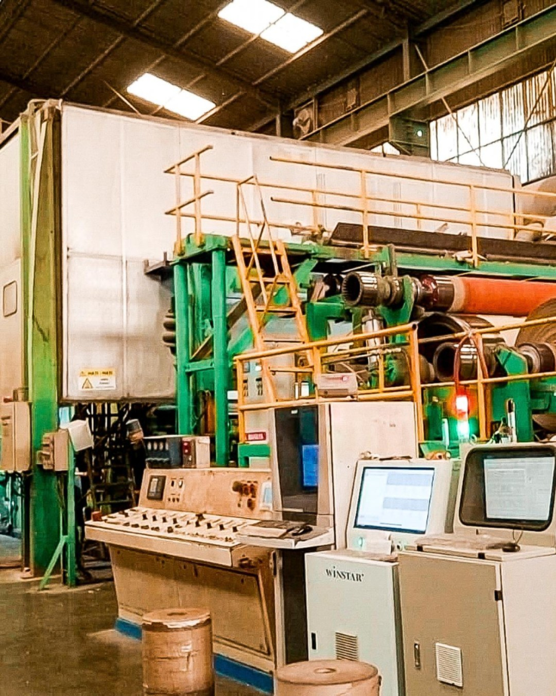
100% Daur Ulang
Seluruh bahan baku produksi berasal dari kertas bekas yang telah diproses ulang, mengurangi kebutuhan kayu segar secara signifikan
Efisiensi Air
Sistem pengolahan dan sirkulasi air limbah terpadu mampu mendaur ulang hingga 85% air proses produksi sebelum dibuang
Hemat Energi
Teknologi mesin Eropa generasi terbaru menekan konsumsi energi spesifik 12% dalam dua tahun terakhir dengan emisi karbon lebih rendah
CSR Komunitas
Program sosial aktif mencakup penanaman pohon, beasiswa pendidikan, dan pemberdayaan UMKM di sekitar wilayah Gresik
Program Penghijauan & Reforestasi
Sejak 2020, Adiprima secara aktif menjalankan program penanaman pohon di area sekitar pabrik dan desa-desa tetangga Wringinanom. Hingga 2024, lebih dari 15.000 pohon telah ditanam dari berbagai jenis seperti trembesi, mahoni, sengon, dan bambu. Program ini melibatkan karyawan, pelajar sekolah, dan warga desa sebagai agen penghijauan aktif.
Manajemen Air & Pengolahan Limbah
Pabrik dilengkapi dengan Instalasi Pengolahan Air Limbah (IPAL) berteknologi tinggi yang memastikan seluruh air limbah diolah hingga memenuhi baku mutu lingkungan sebelum dibuang. Air bersih yang dihasilkan dari proses daur ulang internal digunakan kembali dalam siklus produksi, mengurangi konsumsi air baku dari sumber eksternal secara drastis.
Efisiensi Energi & Energi Terbarukan
Adiprima terus berupaya meningkatkan efisiensi konsumsi energi di seluruh lini produksi. Investasi dalam pembaruan komponen mesin PM-1 dan PM-2 berhasil menurunkan konsumsi energi spesifik sebesar 12% dalam dua tahun terakhir. Kajian instalasi panel surya untuk mendukung bauran energi terbarukan juga sedang dalam tahap perencanaan.
Keselamatan & Kesehatan Kerja (K3)
Keselamatan karyawan adalah prioritas utama. Adiprima menerapkan sistem manajemen K3 yang komprehensif, mencakup pelatihan rutin, inspeksi alat pelindung diri, simulasi tanggap darurat, dan pemantauan kesehatan berkala. Zero accident menjadi target yang terus dikejar melalui budaya kerja aman di seluruh area operasional pabrik Gresik.
Pendidikan & Pemberdayaan Masyarakat
Melalui program CSR pendidikan, Adiprima memberikan beasiswa kepada pelajar berprestasi dari keluarga kurang mampu di sekitar Wringinanom dan Gresik. Perusahaan juga membuka program magang bagi mahasiswa teknik dan lingkungan sebagai bentuk kontribusi nyata terhadap pengembangan sumber daya manusia lokal yang berkualitas.
Transparansi & Pelaporan Keberlanjutan
Adiprima berkomitmen pada transparansi dalam pelaporan kinerja lingkungan dan sosialnya. Laporan keberlanjutan tahunan dipublikasikan sebagai bentuk akuntabilitas kepada seluruh pemangku kepentingan. Perusahaan menyelaraskan program keberlanjutannya dengan target Sustainable Development Goals (SDGs) PBB, khususnya poin 6, 12, 13, dan 15.
Standar & Sertifikasi
Adiprima berkomitmen memenuhi standar nasional dan internasional sebagai bukti kualitas dan tanggung jawab kami.
ISO 9001
Sistem Manajemen Mutu — memastikan konsistensi dan kualitas produk di setiap proses produksi.
ISO 14001
Sistem Manajemen Lingkungan — komitmen kami dalam menjaga kelestarian lingkungan hidup.
SNI
Standar Nasional Indonesia — produk kami telah memenuhi standar mutu produk kertas nasional.
Industri Hijau
Penghargaan dari Kementerian Perindustrian RI atas praktik industri ramah lingkungan.
Berita Terkini
Informasi terbaru seputar perkembangan PT Adiprima Suraprinta dan industri kertas Indonesia.
Adiprima Raih Penghargaan Industri Hijau dari Kemenperin 2024
Kementerian Perindustrian RI memberikan penghargaan Industri Hijau kepada PT Adiprima Suraprinta atas komitmennya dalam penerapan industri berkelanjutan...
Baca SelengkapnyaPeningkatan Kapasitas PM-2: Adiprima Perkuat Lini Kertas Tulis & Cetak
PT Adiprima Suraprinta berhasil meningkatkan kapasitas Paper Machine 2 (PM-2) untuk memenuhi permintaan pasar yang terus tumbuh...
Baca SelengkapnyaProgram CSR: Tanam 10.000 Pohon di Gresik untuk Jaga Lingkungan
Sebagai bagian dari tanggung jawab sosial perusahaan, PT Adiprima Suraprinta mengadakan program penanaman 10.000 pohon di sekitar kawasan pabrik Gresik...
Baca SelengkapnyaMengapa Memilih Adiprima?
Keunggulan kompetitif yang menjadikan PT Adiprima Suraprinta mitra terpercaya industri kertas Indonesia.
Teknologi Mesin Kelas Dunia
Mesin kertas diimpor langsung dari Eropa, menjamin kualitas produksi yang konsisten dan efisiensi proses yang optimal sesuai standar internasional.
100% Bahan Baku Ramah Lingkungan
Menggunakan 100% material kertas daur ulang, kami berkontribusi nyata dalam mengurangi penebangan pohon dan deforestasi hutan Indonesia.
Kapasitas Produksi Besar & Andal
Kapasitas 130.000 ton per tahun dengan dua jalur mesin memastikan ketersediaan produk yang stabil dan kemampuan memenuhi permintaan skala besar.
Lokasi Strategis & Distribusi Nasional
Berlokasi di Gresik, dekat pelabuhan Tanjung Perak Surabaya, memudahkan distribusi produk ke seluruh penjuru Indonesia dan ekspor regional.
Dewan Direksi & Manajemen
Tim profesional berpengalaman yang memimpin PT Adiprima Suraprinta menuju pertumbuhan berkelanjutan.
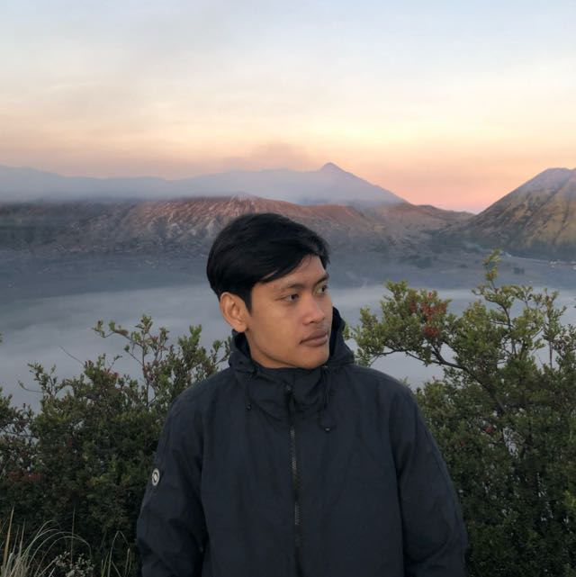
Ir. Azriel Hanief Winata, S.T., M.T., IPM.
Direktur UtamaLebih dari 25 tahun pengalaman di industri pulp dan kertas Indonesia.

Dr. Hendra Kusuma
Direktur OperasionalSpesialis teknik proses dengan keahlian optimasi mesin kertas dan efisiensi produksi.

Dra. Siti Rahayu, M.M.
Direktur KeuanganBerpengalaman dalam manajemen keuangan korporasi dan perencanaan strategis bisnis.
Agus Wibowo, S.T., M.T.
Kepala Divisi Lingkungan & K3Memimpin implementasi sistem manajemen lingkungan dan keselamatan kerja perusahaan.
Klien & Mitra Terpercaya
PT Adiprima Suraprinta dipercaya oleh berbagai perusahaan media, percetakan, dan perkantoran terkemuka di Indonesia.
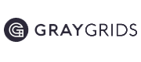
Hubungi Kami
Kami siap membantu kebutuhan kertas dan informasi seputar produk PT Adiprima Suraprinta.
Informasi Kontak
(031) 3979200
Fax: (031) 3979210
info@adiprima.com
marketing@adiprima.com
Senin – Jumat: 08.00 – 17.00 WIB
Sabtu: 08.00 – 13.00 WIB
Kirim Pesan
Lokasi Pabrik PT Adiprima Suraprinta
Desa Sumengko, Kec. Wringinanom, Gresik, Jawa Timur 61176 · Buka di Google Maps